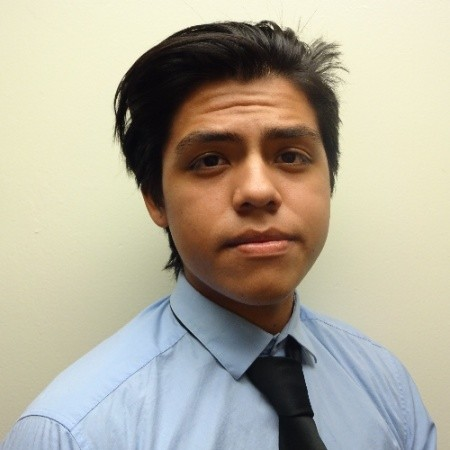

Jesus Badillo
Lead Designer
Goshen, IN
Diego can provide the team with both great UI/UX ideas and come up with prototypes for our project with his skills in Adobe Photoshop, Illustrator, Premier, and Figma. Diego will help the team visualize potential problems that we could not otherwise find while envisioning the project itself.
Alfredo Lima
Chief Financial Officer
Elkhart, IN
Felipe Garcilazo's best strength is working with analytics, programming, and databases as he has interned as an analyst and is where he wants his career. as for his experience as an investor, he sees this platform as a great opportunity for investors to diversify. His experience will help bring features that would help investors in making safe investments through out the website.